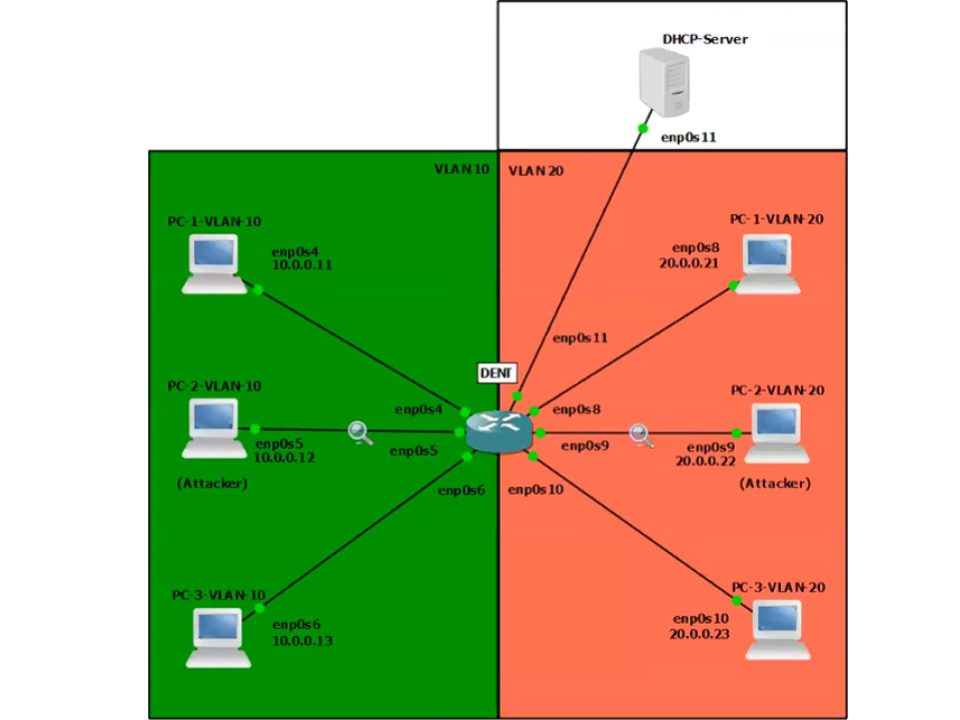
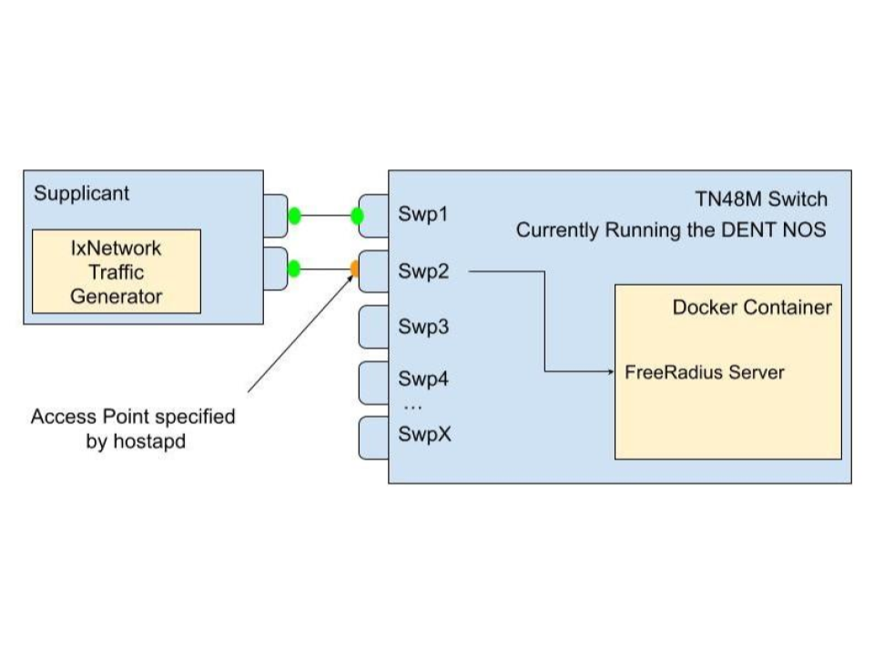

This diagram is for the circuit network of the portable arduino speaker
This Arduino-powered portable speaker is a self-contained, battery-operated audio device designed for
maximum portability and simplicity. It utilizes the
DFPlayer Mini
to play audio files directly from an SD card,
enabling automatic track looping. Powered by 6 AA-batteries, the speaker is easy to maintain, with quick and
convenient battery replacement.
The concept for this speaker originated from collaborative discussions with Jackson Bowles, Alex Anthony, and Brenden Mahoney
as a potential startup venture, where the idea evolved through brainstorming and feedback.
Kernel Dynamic ARP Inspeciton (KDAI) - 2025
KDAI is a Loadable Kernel Module for Linux systems that enhances network security

Screenshot of GNS3 Simulaiton where multiple PC's in different VLANs are connected to a switch running KDAI
The Address Resolution Protocol (ARP)
lacks built-in validation, making networks vulnerable to
ARP cache poisoning
and enabling man-in-the-middle or denial-of-service attacks. Enterprise-grade switches often offer
Dynamic ARP Inspection (DAI)
as a Layer 2 security feature to mitigate such risks.
However, Linux-based networking environments have lacked an equivalent - until now.
To fill this gap KDAI (Kernel Dynamic ARP Inspection), a Linux kernel module, was developed to implement DAI.
KDAI is a Loadable Kernel Module (LKM) for Linux systems that enhances Layer 2 network security by preventing ARP cache poisoning.
It operates by intercepting ARP messages traversing a Linux bridge and comparing ARP entries against a trusted database of IP-to-Mac address bindings.
This database is built dynamically using
DHCP Snooping
but may also be populated using static ARP entries.
Key Features:
- ARP Inspection: Logs and drops ARP packets with mismatched IP-to-MAC bindings to prevent ARP spoofing.
- DHCP Snooping: Builds a dynamic table by monitoring DHCP traffic to ensure valid IP-to-MAC bindings.
- Interface Trust: Interfaces can be marked as trusted (bypass checks) or untrusted (ARP inspection required).
- ARP Rate Limiting: Limits ARP packets to 15 per second on untrusted interfaces to prevent flooding.
- Per-VLAN Support: Applies rules independently to each VLAN for more granular control.
Optimizing RADIUS Server Deployment - 2024
Streamline IEEE 802.1X Network Authentication with a containerized environment

Diagram of a supplicant connecting to an access point on an authenticator,
which forwards authentication requests to a FreeRadius server running in a Docker container
This project simplifies the setup of
IEEE 802.1X authentication by containerizing the
RADIUS server
into a docker image and using
hostapd
and
FreeRADIUS
to manage network access. When run on a device, the image configures it
as both an authenticator and an authentication server, allowing it to handle incoming EAPOL
frames from supplicants (devices seeking network access).
The device acts as an access point, blocking all non-EAP traffic until the authentication process completes.
It forwards EAP messages to the internal RADIUS server for credential validation. Once validated, the RADIUS server
sends either an Access-Accept or Access-Reject message, controlling whether the port is opened for normal traffic or
kept locked.
This setup lets administrators easily replicate the entire 802.1X handshake-including EAP-Start, identity exchange,
RADIUS challenges, and authorization-without complex configuration. The use of hostapd for access point functionality
and FreeRADIUS for credential checking makes it a powerful, flexible solution for network access control.
(CENG) Computer Engineers of the Next Generation - 2023
Teaching others how to program
As the VP of Teaching and Mentoring for CENG, I trained volunteers to teach elementary and middle school students
how to program in Scratch, Java, and Python. Through effective mentoring and a structured curriculum,
I maintained an impressive 92% student retention rate year after year, impacting approximately 300 children annually
from 2019 to 2023.
If you are intrested in getting involved with CENG please visit some of the ICONS on this conatiner.
Notes
This section simplifies complex concepts I encountered while building my projects, making them easier to reference for both myself and others intrested in something similair.
Code Courts and Copyleft
The history of UNIX, POSIX, BSD, and GNU/Linux
History sometimes contains some very unique momments. Here is a story I learned that I really liked.
The UNIX and Pre UNIX Era:
Before UNIX, IBM Mainframes dominated computing. Their operating systems were written in Assembly, locking software to specific hardware. In 1969, Ken Thompson and Dennis Ritchie at AT&T Bell Labs challenged this by developing UNIX on a discarded PDP-7. In 1972, Ritchie created the C programming language to solve the problem of hardware lock-in. Because UNIX was rewritten in C, developers could simply recompile the C code for other hardware. While they built the core kernel and file system, their manager, Doug McIlroy, also pushed them to include a feature that allowed programs to be coupled together. His vision inspired the UNIX philosophy: “Write programs that do one thing and do it well”. The result was that in 1972, Thompson implemented the pipe() system call and the famous '|' symbol, which is still used today. Before pipes, developers manually passed data between programs using disk. Pipes were revolutionary since they kept results in memory.
While the technology was impressive, due to a 1956 antitrust ruling, AT&T was legally classified as a telecommunications monopoly and as such was prohibited from operating in other businesses like computers or software. Since AT&T could not sell UNIX, they distributed it to places like academic institutions under a license. They shared the compiled software (UNIX OS), and the source code (C files) that built it. This allowed a generation of people to not just use the OS, but to open it up, study it, and modify it.
You might think, if it were under a license, then weren't they in the software business? To stay legal, AT&T charged what they called "Nominal Fees." They told the government that they weren't selling UNIX, they were simply charging the universities for the cost of the physical tape, the box it comes in, and the postage to mail it. Because they weren't making a "profit", they weren't technically "in the business".
The Introduction of the Berkley Standard Distribution:
One university that had access to this software and its source code was UC Berkeley. A graduate student named Bill Joy (who later co-founded Sun Microsystems) took this code and started adding new features like the “vi” text editor and the “cshell”.
At the time, UNIX ran on the Thompson shell 'sh'. The Thompson shell didn't have scripting features like if statements or loops; these were added in the cshell.
Under a contract from DARPA - the government agency that created the TCP/IP standard - Bill Joy and those he worked with were tasked with building the TCP/IP networking standards directly into the UNIX operating system. Their work created the socket() API. Historically, if you wanted computers to talk to one another, you needed to pay for proprietary software, which oftentimes only worked with communicating between that specific companies machines. This new "fork" of the UNIX Operating System became known as the Berkeley Software Distribution (386BSD). Its portability, no cost for entry, and ability to connect to other machines made it immensely popular.
In 1982, the era of open collaboration abruptly came to a halt, however. In an effort to crack down on monopolies, the government broke up AT&T into 7 parts. The original AT&T company, having been broken up, was now finally allowed to enter the computer and software businesses. Seeing the value of what had been built with UNIX, AT&T declared it a "trade secret". Consumers now needed to purchase System V in order to use UNIX and they were no longer able to share it with others. In response to AT&T, the Bil Joy and the Berkeley team began a coordinated effort to remove proprietary AT&T Unix code from BSD by rewriting each component with their own original implementation.
This rewrite became the foundation for three major BSD derivatives: FreeBSD (1993) for PC stability, NetBSD (1993) for extreme portability, and OpenBSD (1996) for a "security-first" focus.
While different BSD versions were gaining traction, it was soon met with litigation. AT&T sued the University of California, claiming that parts of BSD contained stolen "trade secrets". As part of the lawsuit, BSD suffered slower development and widespread hesitation from companies and developers who feared legal risk.
POSIX and GNU:
While the Berkeley Team was working on BSD and its derivatives, Richard Stallman, a staff Programmer at the MIT Artificial Intelligence Laboratory, began building the GNU Project. GNU, which stands for GNU's Not UNIX was focused on making proprietary software obsolete.
When Stallman started the GNU Project in 1983, he didn't have a free operating system yet. To write code for a new system, you need an editor, a compiler, and a debugger. Since he didn't have free versions of these yet, he had to use the proprietary UNIX systems available at MIT to write the GNU tools. GNU tools were written to be Unix-compatible and later aligned with the emerging POSIX standard. POSIX is a set of formal standards created by IEEE in the 1980s to define how "UNIX-like" Operating Systems should behave. It specifies the system calls, process model, file, and directory semantics. The idea of permissions, signals, pipes, and the command line utility was a behavior a compliant OS would also need to provide. A good example is an OS that follows the POSIX standards must have a function call that implements fork().
The biggest contribution the GNU Project made was the GPL (General Public License). The license uses copyright law in reverse (which he called Copyleft). If you purchase a product containing GPL-licensed software, you are essentially buying a "bill of rights" that grants you the freedom to run, study, modify, and redistribute the code. You have a legal right to access the source code, and once you have it, you can even give it away or sell your own modified version to others without the original seller's permission. Conversely, if you sell something that includes GPL software, your rights are balanced by strict obligations: you must provide the source code to your customers and you cannot legally prevent them from sharing or changing that code. While you can keep purely internal modifications secret, the moment you distribute the software to someone else, the "Copyleft" rule triggers, requiring you to pass on the same freedoms you received and preventing you from locking away the software.
Not only did the GNU Project contribute this license, but it also contributed the GCC Compiler. GCC initially stood for the GNU C Compiler. Its only purpose at the time was to compile C code for a future GNU operating system (which did not yet exist). It was meant to replace proprietary UNIX compilers. Since its creation, the GCC name has changed because it now supports multiple languages like C++, Fortran, Ada, Java (later-removed), Go (later-removed), and Rust (in progress in some branches). GCC was the first major success of the GNU Project, but Stallman's goal was never just to build a compiler - it was to create a completely free replacement for the Unix operating system. After GCC, the GNU team developed the Bourne Again SHell (Bash) and the GNU Coreutils, re-implementing classic UNIX commands like ls, cp, mv, rm, cat, grep, and chmod. The GNU C library (glibc) was also an important tool developed by the GNU Project. It provided the POSIX API that user programs rely on.
All of these tools were written from scratch to behave like their Unix counterparts, but without using any proprietary UNIX source code. In effect, GNU was building a free Unix-compatible userland on top of existing UNIX systems (they used UNIX to build the UNIX replacement), with the long-term goal of replacing UNIX entirely. In many ways, this endeavor was similar to that of the Berkley group. The major difference was that Berkeley wanted to improve and share UNIX software, while Stallman wanted to liberate software by guaranteeing user freedom through copyleft licensing. By 1990, GNU had built almost the entire userland of a UNIX system, but it was still missing a kernel. The GNU project did attempt to build its own kernel (the Hurd), which was based on top of the MACH design from Carnegie Mellon, but development was slow, and the OS was unstable. This gap created a growing need for a free, UNIX-like kernel, and that need set the stage for another project that emerged for an entirely different purpose…
The Introduction of Linux:
Andrew Tanenbaum, a professor in Amsterdam who taught operating systems, was struggling to find an alternative to UNIX. He needed a system that students could read and modify. UNIX licenses were now too expensive, which meant they could no longer fulfill that role. So Tanembaum decided if he couldn't legally give students UNIX, he would write a small UNIX-like OS they could study. This OS was called MINIX (Mini UNIX). He published it and its sources without using a single line of AT&T's code in the textbook Operating Systems: Design and Implementation. MINIX used a microkernel design, which meant the kernel was kept small, and most services like the file system, drivers, and memory management ran in user space. Even though MINIX source code was available, it was not free in the GNU sense. Tanenbaum required students to buy the textbook to get the code, and redistribution was restricted; these qualities made it unsuitable for the GNU project. These limitations left many developers wanting more from MINIX, and one of them was a young Finnish student who decided to build the system he wished MINIX could be.
In 1991, a 21 year old computer scientist named Linus Torvalds inspired by MINIX decided to develop a free Operating System kernel as a personal project from scratch called LINUX. When people soon realized that they could take the GNU tools and run them on the LINUX kernel, it grew in popularity. At first, LINUX had a license forbidding commercial redistribution. Eventually, however, in 1992, it was changed to be under the GPL license. After this point LINUX became the first kernel amongst a sea of other educational and proprietary kernels that was free, GPL licensed, designed for PCs, actively developed, and did not use AT&T's source code.
Most users and developers think of LINUX as shorthand for the whole ecosystem, but some, including Richard Stallman, believe that since GNU built almost the entire operating system: the compiler, shell, core utilities, libraries, and more, it should be included in the name: GNU/Linux.
Over time, development of GNU and LINUX accelerated. Thousands of contributors refined the kernel, expanded the GNU tools, and built distributions that made the system easier to use and adapt. What began as a handful of student and research projects evolved into one of the most actively developed software ecosystems in the world.
Understanding Regular Expressions (Regex)
Patterns, Syntax, and How Regex Works
Regular expressions (regex) are patterns used to search, match, and manipulate text.
They allow you to describe rules for text in a concise way, making them useful for tasks
like validating input, searching logs, extracting data, or performing find-and-replace operations.
Using Regex in Python: Python provides the "re" module for working with regex.
import re
pattern = r"\d+" text = "There are 24 apples" match = re.search(pattern, text) ifmatch:
print("Found:", match.group())
For hands-on practice, I highly recommend the interactive exercises on RegexOne.
They provide clear explanations and progressively challenging problems to make learning regex easier.
CPU Boot Process & Execution
How the CPU Starts, Loads the OS, and Runs Code
Understanding how and where the CPU begins is crucial for low-level programming and OS design. The following is a simple
breakdown of that process.
Step 1 - CPU Startup: When powered on, a CPU (Intel, AMD, etc.) immediately begins executing
instructions at a fixed reset vector (e.g., 0xFFFF0).
Step 2 - Firmware Mapping: BIOS/UEFI manufacturers (AMI, Phoenix, etc.) write firmware that lives in
read-only memory (ROM/flash). Motherboard manufacturers wire the hardware so that this firmware is mapped to the
CPU's reset vector. This electrical mapping is what makes the firmware appear exactly where the CPU expects it
when the system powers on.
Step 3 - Hardware Initialization and Bootloader: Once running, the BIOS/UEFI firmware performs POST (Power-On Self-Test),
verifying that the CPU, RAM, storage devices, and essential motherboard components are present and functioning
correctly before searching for a bootable device.
Step 5 - Kernel Handoff: When found he bootloader loads the operating system kernel into RAM and jumps to its
entry point. At this moment, control transfers from firmware to the operating system, and the CPU begins executing
kernel code.